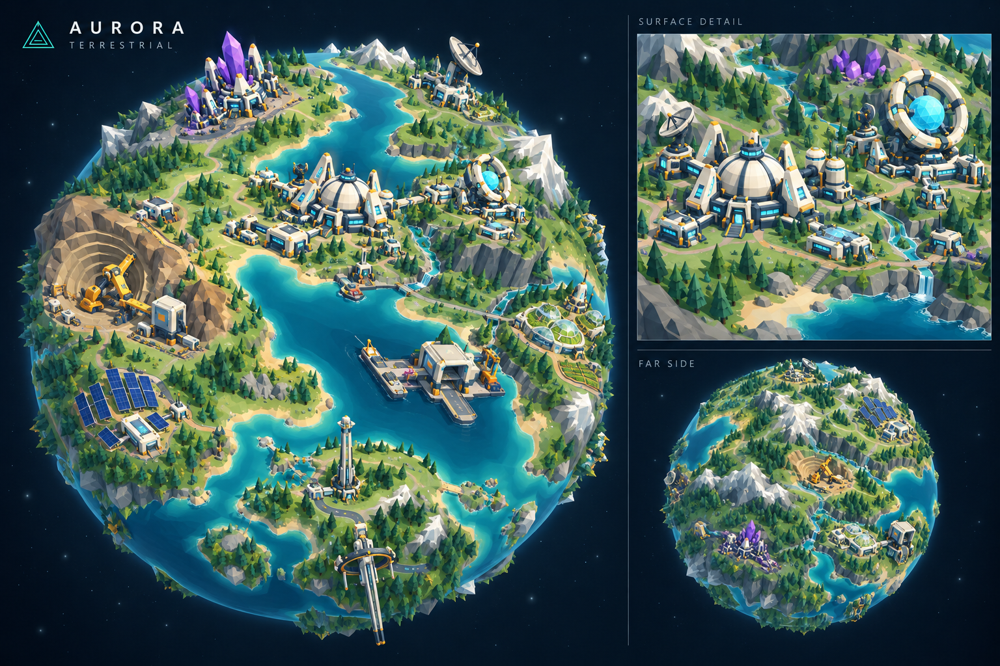
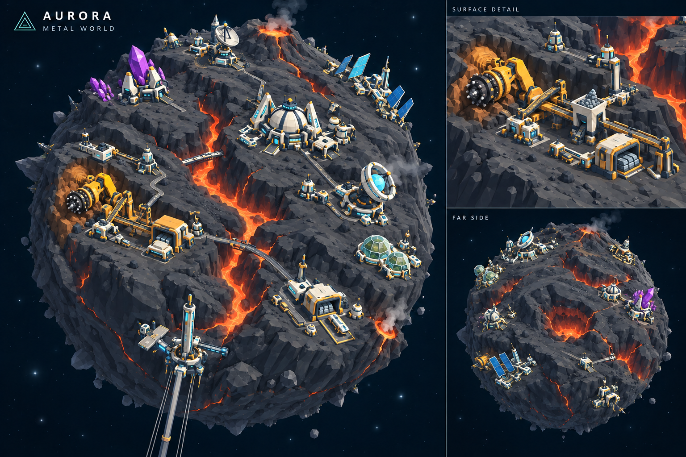
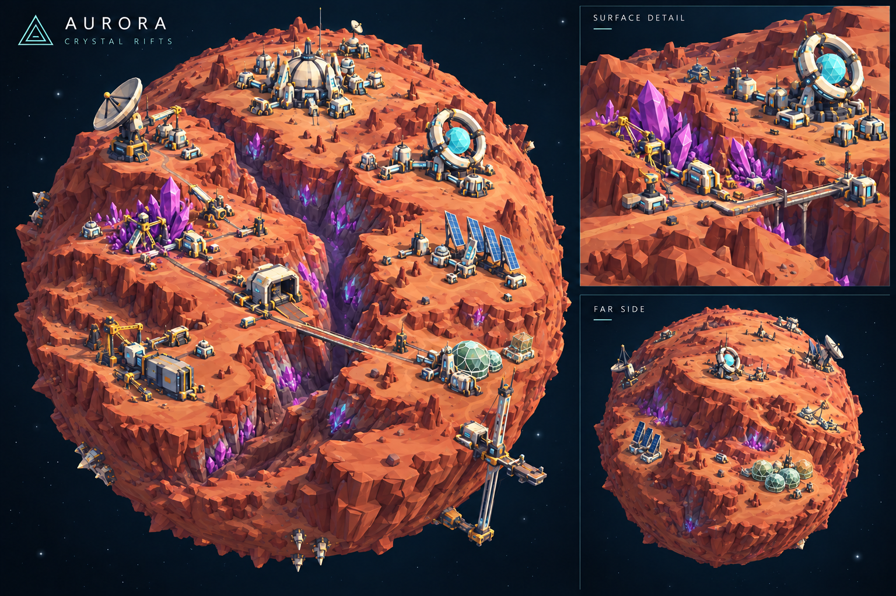
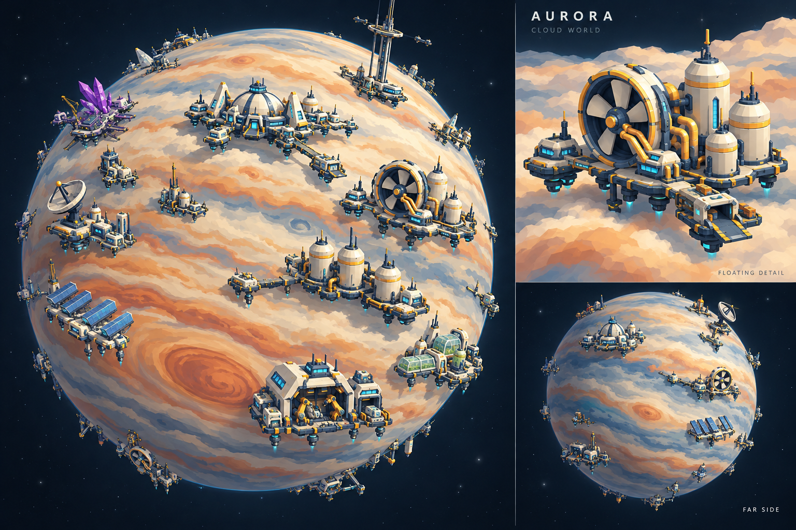
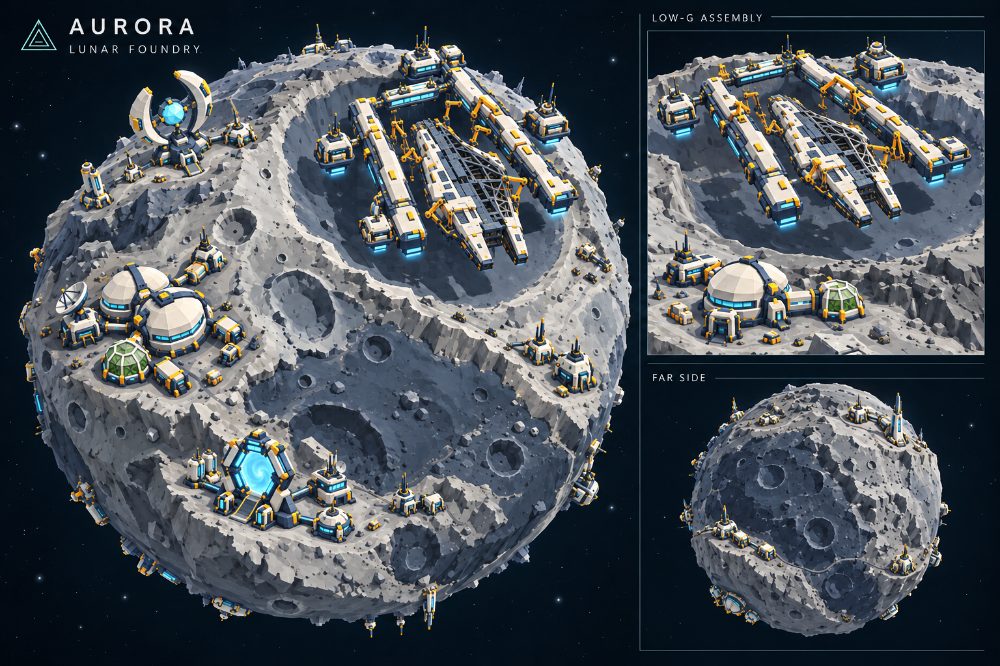
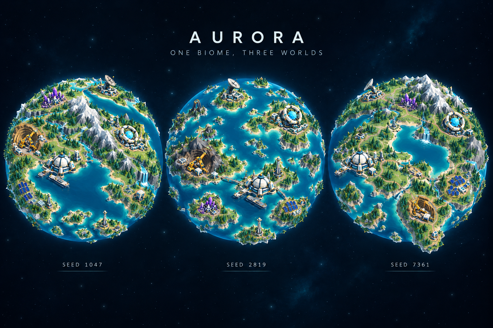

01 / 海湾、山脊与森林
类地星
连续大陆与水系先成立，再让机构沿缓坡、山脚和海湾落位。


四类星球与月球的整合参考：沿用早期 AURORA 的配色和大轮廓，让已有建筑顺着连续地形落位，不再给机构垫一块圆盘。
连续大陆与水系先成立，再让机构沿缓坡、山脚和海湾落位。

分支断裂切开完整岩地，开采与运输依附稳定岩台。

矿脉沿断层露出，功能区随谷口、崖顶和物流方向组织。

没有假陆地；按模型占地组织开放框架与小型服务浮舱。

浮空旗舰中心保留半成品深空吞噬者；舰体以既有模型为准。

双大陆、群岛海洋、内海大陆。示例 seed 为概念标签，供实现地形差异时参照。

附上已完成模型与本图包。模型决定造型；原版 AURORA 决定画风；整合图决定地形与落位方向。
# 给 GPT‑6 Pro：把现有模型接入 AURORA 星球 把本文、图包和已经完成的模型一起交给 GPT‑6 Pro。下面正文可直接作为任务提示词。 --- ## 目标：修好实现，保留 AURORA 请在现有项目中实现完整的 AURORA 星球视图，复用我已经完成的建筑模型。**不是重新设计美术，也不是再造一套园区模型。** 保留最早 AURORA 的设计语言：简单、直观、轮廓鲜明的卡通太空设施；大块低多边形地形；海蓝与青绿的自然环境；灰白建筑、深蓝结构、暖金机械、紫晶和少量青色灯光。建筑在整球视角仍能一眼认出，不要缩成芝麻，不要改成同尺寸方块，不要回到松散的建筑海。 需要做到： 1. 四类星球具有完全不同的地貌机制。 2. **同一类型中的每颗星球也拥有独立地形**，不是四张固定地图，不是旋转、镜像或换色。 3. 现有主体与少量周边设施作为紧凑机构，遍布整个球面，建筑间仍能读出连续自然地形。 4. 取消围绕建筑群生成的圆形地台、圆形清场、石头围圈和统一环路。 5. 原玩法、建筑 ID、名称、等级、数值和存档保持原样。 ### 参考的优先级 - 已完成的模型决定建筑造型、比例、配套和对象关系。 - 旧 AURORA 源码及原图决定配色、材质和简洁程度。 - 本包整合图决定星球地貌、落位关系和视觉方向。图中个别设施数量、道路、轮廓不替代真实模型与玩法目录。 - 主图与辅助视图是 image_gen 概念参考；实际三维正反面必须由同一个世界数据产生，不能各自照图拼地图。 旧版来源：`opendesign/mockups/planet-construction-review/reference/aurora-original.html`。 随包旧图：`references/aurora-original-global.png`。 ## 1. 把旧版颜色与材质保留下来 以下是旧源码中的颜色，不要另配一套灰暗工业风或高光塑料风： | 用途 | 颜色 | |---|---| | 建筑灰白 / 高亮白 | `#e1e4d7` / `#edf2dc` | | 屋顶与结构蓝 / 深色结构 | `#466277` / `#22374d` | | 基础金属 / 最暗缝隙 | `#4b5963` / `#172535` | | 青色能源 / 蓝色玻璃 | `#58ebd3` / `#216789` | | 工业金属 / 暖金机械 | `#d17929` / `#ffbd53` | | 晶体主体 / 晶体亮面 | `#a14ce0` / `#e1a6ff` | | 气体设施 / 赤色点缀 | `#49c9b2` / `#c7693c` | | 道路 / 道路标记 | `#465263` / `#f0ce86` | | 深海 / 浅海 | `#075779` / `#208f9b` | | 草地 / 深草地 | `#68a765` / `#447f52` | | 沙岸 / 高地 / 雪 | `#d8c68b` / `#91a985` / `#e5ebe4` | | 树冠 / 树干 | `#2e784e` / `#716043` | 使用清晰的 Flat Shading 和大色块。低多边形意味着形体简洁，不是给每个三角面随机颜色、撒满碎石或做棋盘。只让能源、玻璃和少量机械细节发光；阴影能说明体积，但不能把主色压成灰黑。检查色彩空间、曝光和材质，不用泛光洗白建筑。 ## 2. 先生成世界，再安排设施 以稳定的星球身份和生成器版本派生确定性 seed。现有存档若没有地形字段，优先从已有稳定身份派生视觉数据，不要求重置或改写正式存档。 把地貌、水系、植被与建筑选址分成稳定的随机通道。升级、显示一个建筑或切换画质不能重新洗牌大陆。 在球面单位方向上计算连续三维地形场，避免经度接缝和极点问题。先有大陆、盆地、山脉、裂谷等大结构，再加少量次级变化；颜色随地质、高度、坡度和环境成片变化。 ### 类地星 `terrestrial` 连续大陆与海洋，海岸、河谷、山脊、森林和低地相互关联。不同 seed 改变大陆连接关系、海陆比例、山脉走向、内海与群岛，而不只是移动同一张地图。矿场依山，太阳能在开阔缓坡，研究与主基地可在海湾低地，观测设施放高地。 ### 金属岩星 `mercury` 深灰玄武岩大陆、分支熔岩裂隙、偏心火山群和冷却台地。建筑落在稳定岩台，运输跨越少数必要沟谷。不同 seed 改变火山数量与位置、断裂方向、岩台连通关系。不要海洋、露天森林，也不要把每座建筑围成一个火山圆盘。 ### 火星岩星 `mars` 赤色高原、宽窄不等的主裂谷和分叉支谷，紫晶沿岩层裂隙成簇生长。矿场依附矿壁，实验设施在稳定崖顶，物流沿谷口与必要桥梁通行。不同 seed 改变主谷方向、分支和高原面积。不要蓝色海岸，也不要把晶体均匀插满球面。 ### 气态巨星 `gas` 奶油白、铜橙和蓝灰的宽云带，偏心风暴以及层次清晰的云顶。不同 seed 改变带宽、扰动、风暴位置与尺度。**没有实体地表、矿山或假陆地。** 沿云层上方的球面壳层部署浮空设施。支撑结构按现有模型的实际占地设计为开放框架、条形甲板、分组舱体和连接桁架；不要统一圆形托盘。每组保留主建筑与小型配套，能看到下方云层和悬浮高度。金属、晶体设施保留原玩法接口，视觉采用平台上的原料处理与存储模块，不虚构地面矿山，也不据此改变产量。 ### 月球（补充） 灰白月壤、深色月海、大小叠覆的撞击坑与断崖。自然陨坑可以是圆的，但不能每个机构脚下恰好长出同样的圆台。月球设施沿缓坡、坑缘和稳定月海分布。 保留 `Moon_Base`、`The_EU_X_Radar`、`Wormhole_Generator`、`Flagship_Center` 的现有模型。旗舰中心整体浮在月面上方，利用低重力进行巨舰装配；中间保留半成品深空吞噬者 `Iron_Behemoth`。船体、两侧施工轨与四个小型配套浮舱是不同对象，中间没有实体大地板。**舰体外形以已完成模型和随包旗舰参考为准，不照整球图中的简化舰体重新建模。** ## 3. 消除圆形地台，而不只是隐藏圆盘 禁止用园区中心和统一半径： - 径向压平一整片地形； - 混合出圆形凸包、浅色圆斑或圆形清场； - 撒一圈石头、树木、护栏或道路遮接缝； - 给每组模型套同样的基座。 按**每个实际接地建筑的 footprint**处理局部接触面。只有确实承重的范围才做小幅切填、短挡墙或薄基础，边缘与自然坡地连续衔接。主建筑与配套之间保留原地表，不把整个机构烫平。场地不合适就换位置或调整配套局部布局，不用巨大平台强行容纳。 模型本身必要的机械底座、反应堆圆环、雷达碟和矿坑，与“整片园区的圆形地台”要区别处理；不要为了禁止地台误删设备结构。 道路连接真实入口、货运口和设备接口，沿地形通过。只画有用途的支路，不自动生成封闭环路。输送带接矿壁、处理与装运模块；植被和零星岩石按自然区域出现，不以网格、等间距点阵或环形布置。 ## 4. 让模型真正站在球面上 整组紧凑机构以当地径向为上方向，保持模型原比例，不沿三个轴分别压缩，不把主体网格弯成球壳。配套根据自己的接地点调整高度和必要连接件，避免悬空、穿地、道路断裂。 布局覆盖正面、背面、南北半球；不把全部设施挤到开场镜头一面。跨机构保留地貌，机构内部保持“一个可辨主体＋少量有用途的小配套”，不要增加无意义碎楼凑密度。建筑在整球视角的识别度以旧 AURORA 原图为基准。 每个逻辑建筑仍只有原来的状态、升级和产量。装饰性配套不额外增加逻辑建筑、资源或账号数据。点击任意子模型选择所属逻辑设施。 地形可视网格、地表高度查询、建筑落位、道路、拾取、镜头定位、CPU/Worker 与 LOD 共用同一份确定性布局。画质切换只改细节和渲染成本，不改山脉、海岸、建筑位置或功能区。复用几何、材质、实例化和已有缓存策略。 ## 5. 交付与检查 先识别现有模型入口、正式渲染入口和数据接口，沿用现有结构接入，不另建一套玩法系统。 在独立预览中给我看： - 四类型各至少三个 seed 的整球对比；同类之间可见地貌结构差异。 - 旋转一周可见的背面和极区，建筑与地貌自然延续。 - 建筑近景：主体与配套完整、地基贴合、没有统一圆台或石头围圈。 - 同 seed 重载、画质切换及 CPU/Worker 路径布局一致。 - 现有昼夜、建造状态、点击跳转、太空电梯与轨道设施关系保持正常。 概念图中的 1047、2819、7361 是地貌方向标签，不是已经通过程序验证的随机种子结果。实现时用真正生成的结果验收。 遵守项目 AGENTS.md：`data/universe.json` 与 `data/session.json` 是正式个人数据；游戏测试只使用临时目录中的 `EMPIRE_SAVE_FILE`、独立会话与独立测试端口；静态预览使用 8390。**8289 不参与测试，不重置用户资源、科技、舰队或战报。**在 finally 中清理自己创建的测试服务和临时数据。 本次先交付可审阅的独立预览。正式切换等我看过整球效果后再做。
# AURORA 星球图片提示词 使用方法：附上 `references/aurora-original-global.png` 作为**画风、颜色、体量**参考，附上已完成模型的渲染图作为**建筑造型**参考。每次使用下方“共同提示词＋一个星球专用段”。不要继承旧原图的圆形地台。 ## 共同提示词 生成一张 AURORA 卡通太空策略游戏的完整星球概念图。严格延续参考中原版 AURORA 的设计语言，不重新设计美术：简单直观的大轮廓、干净的 Lowpoly 平面分色、明确的主体和少量小型配套设施。灰白建筑 #e1e4d7，深蓝结构 #22374d、#466277，暖金机械 #ffbd53，青色能源 #58ebd3，紫色晶体 #a14ce0。深海 #075779、浅海 #208f9b，草地 #68a765、#447f52，沙岸 #d8c68b，雪 #e5ebe4。只在对应环境使用自然色，不让熔岩星和红岩星也长出类地海洋。 画面为横向 3:2，深蓝黑太空背景。左侧约三分之二展示完整球体轮廓，右上展示一处模型与地形的接合近景，右下展示背面地貌方向。建筑从近侧延伸到远侧地平线，能看出整个星球都在建设。建筑足够大，在整球画面中可凭轮廓辨认用途，配套小而紧凑，地貌在机构之间连续通过。使用柔和明确的日光、干净阴影和少量能源亮点。 先构成一颗完整而连续的自然星球，再让现有模型因地制宜落位。保留参考模型的识别轮廓，不随机替换成新楼。道路连接入口与实际物流流程；矿场贴矿壁，雷达在开阔高地，工业设施有货运关系。每组机构不共用同一个模板。只在真实建筑脚下出现必要的薄基础。 禁止：建筑群周围的圆形地台、圆形土地贴片、统一环路、石头围圈、棋盘式碎石、等间距撒楼、独立展示底座拼成星球、统一大小的复制方块、写实噪点、复杂细碎工业纹理、厚重雾气、刺眼泛光、把所有设施缩得看不清。 画面只放少量英文标题，不放解释大段文字。 ## 01 类地星：海湾与分水岭 标题 AURORA / TERRESTRIAL。弯曲但不对称的大陆围绕偏心内海，长短不一的海湾与河口、连贯山脊、坡麓森林和浅色沙岸。沿海低地放主基地和研究所，矿山镶在自然山脚，能源设施沿开阔缓坡布置，生态设施靠水源，仓储与装运设施靠运输通道。建筑与植被共享同一块自然地面，海岸直接经过机构附近，没有圆形清场。近景重点显示平面建筑接入起伏坡地的方式。 ## 02 金属岩星：玄武岩与熔岩裂隙 标题 AURORA / METAL WORLD。深灰玄武岩球体，偏心火山群、分叉而非等距的橙红熔沟、大小不同且彼此连通的冷却岩台。金黄钻臂和处理设施嵌入真实矿壁；主基地、研究所与工业设施落在宽阔稳定的岩台，跨沟桥梁只出现在必要的物流连接处。设施之间是连续粗犷岩地，不能一个建筑配一块圆台。没有蓝色海洋，没有露天草坪或树林，绿色只在密闭温室内。 ## 03 火星岩星：高原与紫晶裂谷 标题 AURORA / CRYSTAL RIFTS。温暖赤色和陶土橙的完整岩质星球，一条主要大裂谷及不对称支谷切开高原；晶体沿断层在不同高度成簇露出。谷底、崖壁与高地要有连续地质关系。开采、分选、成品转运顺矿脉通到谷口，主体建筑在稳定崖顶，桥梁跨越局部窄谷。不出现同心圆矿坑模板、圆形园区或一圈圈小晶体。没有海水和类地森林。 ## 04 气态巨星：云海上的浮空设施 标题 AURORA / CLOUD WORLD。奶油白、铜橙与蓝灰色的宽阔流动云带，一处偏心大风暴和少量小涡旋，云面采用简洁 Lowpoly 色块而不是写实烟雾。球体没有陆地、山、海岸或铺装地面。所有设施在云顶上方悬浮：按功能组织的开放式框架、条形甲板、分组舱体，短桁架连接主建筑和小配套，能看到下方云层以及青色悬浮装置。不要统一圆盘浮台，不要在浮台上堆一座假山。保留现有工业设施轮廓，原料处理模块采用平台化接口。 ## 05 月球：低重力重型装配 标题 AURORA / LUNAR FOUNDRY。灰白月壤、大小不等且相互叠覆的陨坑、深色月海和断崖。四种月球设施分布在全月面：三瓣密闭月球基地、双弧深空雷达、六边形虫洞发生器、浮空旗舰制造中心。普通设施使用小范围实际接地基础，不抬起一整块圆形园区。 旗舰中心整体离地悬浮，两侧粗壮装配轨之间是一艘半成品深空吞噬者，装甲只装了一部分，露出内部骨架；周边四个小型服务浮舱。船体前部宽、后部窄，前端为宽大的分叉轮廓，禁止画成长针尖舰首。场景展现低重力巨型装配，不是地面船厂。舰体与施工轨各自独立，中央没有整块实体地板。需要附上 `references/Flagship_Center-shape-reference.png` 锁定形状。 ## 06 同类星球也要完全不同 标题 AURORA / ONE BIOME, THREE WORLDS。同一幅横向图中并列三个等尺度的完整类地星球，画风、光照、建筑模型和配色一致，差异来自地形结构： - SEED 1047：两块不对称大陆，宽阔弯月形海域，一条明显分水岭，少量近岸群岛。 - SEED 2819：海洋占主导，分散岛链与一座马蹄形大岛；设施集中在适宜海峡与岛屿缓坡。 - SEED 7361：大面积连通大陆，偏心的肾形内海，山脉集中在一个象限，深河口与长半岛。 不能将同一地图旋转、镜像或换色。每颗的大陆连通性、海岸轮廓、水系、山脉走向和建筑选址都不同。仍然禁止圆形地台。上述 seed 只作为概念标签，不表示程序已经生成这些结果。 --- ## 实际生成记录 本图包使用内置 image_gen 生成。完整英文原始请求见 `imagegen-prompts.json`；金属岩星、火星岩星和月球的局部修订见 `imagegen-corrections.json`；同类星球对照请求见 `06-terrestrial-seeds-prompt.txt`。以上中文提示词为便于继续出图的整理版。